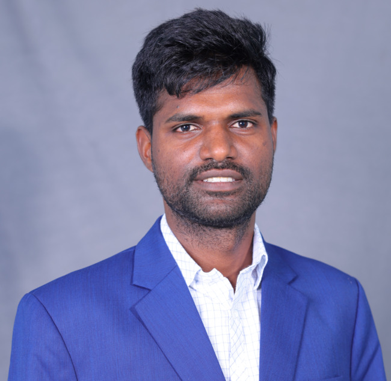

AI-native & adaptive networks
Model drift detection, adaptive retraining, and intelligent control for changing traffic and operating conditions in Open RAN.
AI / MLModel adaptationOPEN NETWORKS. INTELLIGENT SYSTEMS.
Dr. Venkateswarlu Gudepu
Postdoctoral Researcher · OpenLab / DORADO
The University of Texas at Dallas
Building intelligent, efficient, and interoperable networks for 5G and beyond.

01 / BACKGROUND
I am a researcher at UT Dallas OpenLab, working with Prof. Andrea Fumagalli. My work brings together AI/ML, open radio access networks, and experimental systems to address practical challenges in next-generation communications.
I focus on how networks adapt to changing conditions, how we measure and reduce their energy use, and how equipment from different vendors can work together reliably. At OpenLab / DORADO, my work spans research, test automation, and interoperability validation.
I received my Ph.D. in Computer Science and Engineering from IIT Dharwad, where I was the first Ph.D. graduate in the department.
02 / RESEARCH
Connecting learning, measurement, and validation in real network systems.
Model drift detection, adaptive retraining, and intelligent control for changing traffic and operating conditions in Open RAN.
AI / MLModel adaptationExperimental profiling of virtualized RAN and cloud platforms to understand the relationship between computing resources, performance, and energy.
vRANSystems measurementInteroperability, performance, and security evaluation, supported by reproducible test procedures and automation for commercial network equipment.
Open RANTest automationProgrammable multi-vendor optical transport, OpenROADM integration, and YANG-grounded agents for network operations.
OpenROADMAgentic AI03 / SELECTED WORK
A selection of collaborative research. Explore the full indexed record on DBLP .
3 publications
Linqi Xiao, Abhishek Bhattacharyya, Moojan Kamalzadeh, Venkateswarlu Gudepu, Larry J Horner, Andrea Fumagalli
DOILinqi Xiao, Aparaajitha Gomathinayakam Latha, Venkateswarlu Gudepu, Andrea Fumagalli
DOIVenkatesh Gani, Dhruv, Yaswanth Kumar L. S., Ashit Subudhi, Majid K, Abhishek Bhattacharyya, Venkateswarlu Gudepu, Bheemarjuna Reddy Tamma, Koteswararao Kondepu
DOIPublication details: ORCID record
04 / TEACHING & MENTORING
My teaching connects architectural foundations with practical examples, visual explanations, and experimental systems.
From early cellular systems to LTE, 5G NR, and emerging 6G architectures.
Radio protocols, RAN disaggregation, virtualization, and O-RAN interfaces.
Network observability, performance evaluation, and reproducible test automation.
05 / PROFESSIONAL ACTIVITIES
Co-Leader of Research Stream 04 (RS-04) within the next Generation Research Group (nGRG), contributing to discussions on future networks.
Collaborative research and validation across open radio and optical networking, connecting academic work with industry testbeds.
Sharing research through conference presentations, demonstrations, panel discussions, and student mentoring.
06 / CONTACT
For research collaborations, academic discussions,
and questions about my work.